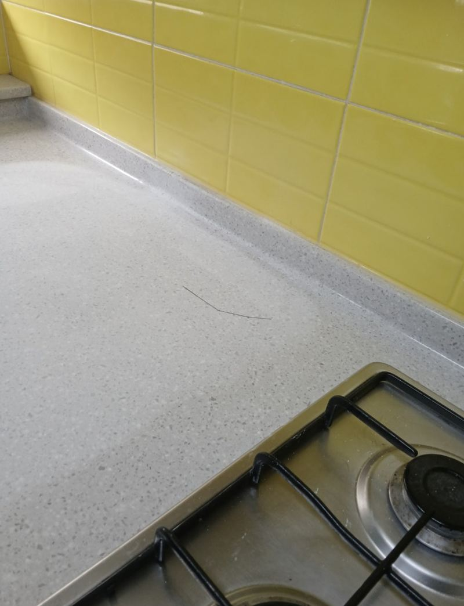
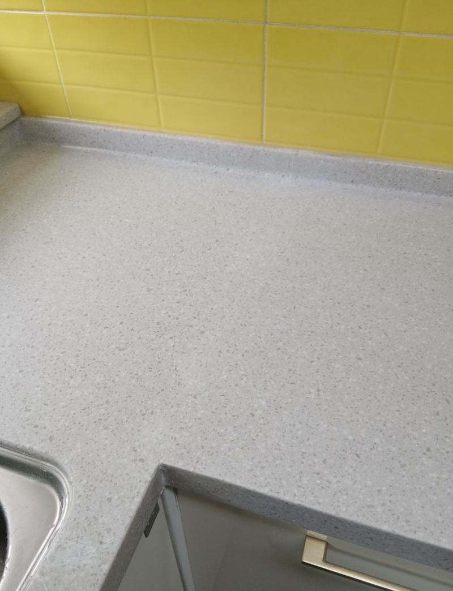
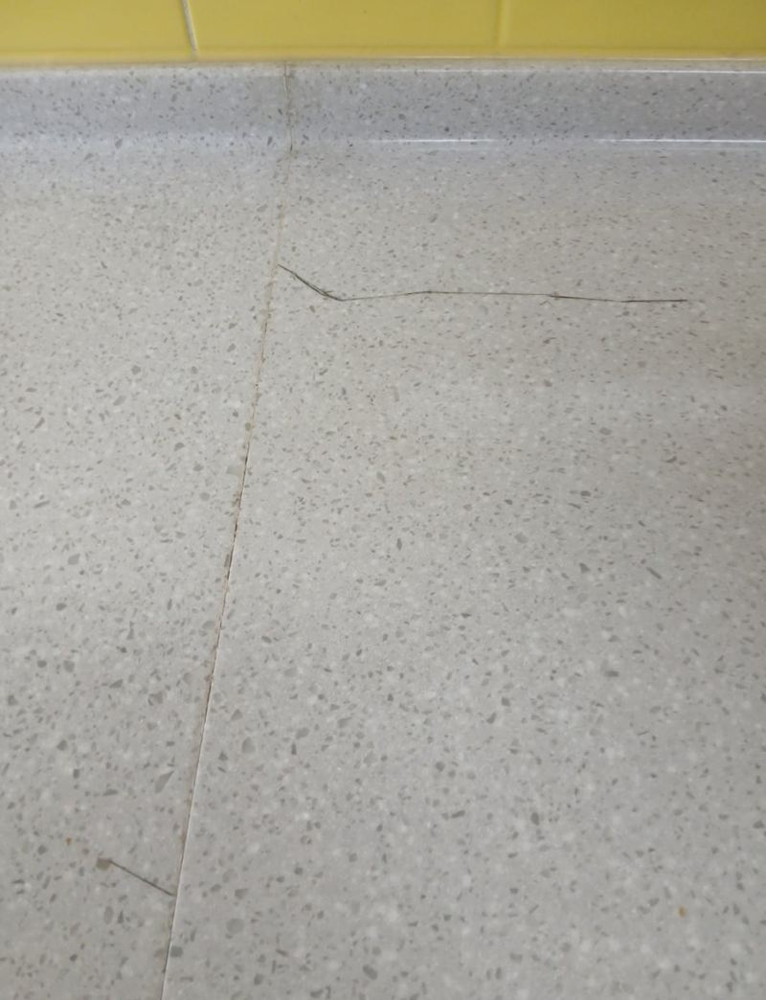
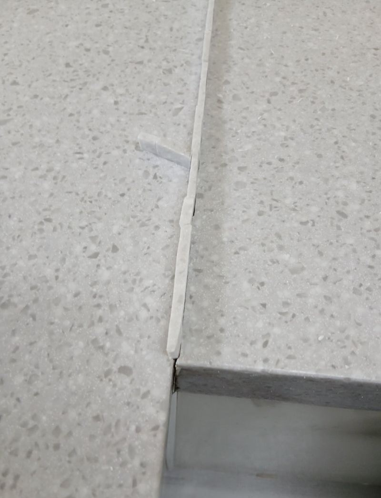

김포 싱크대 흠집 복원 방법과 작업 과정


복원 전복원 후← 밀어서 전후 비교 →
"상판에 금이 가서 물이 밑으로 새요. 지금은 종이를 덧대 쓰는데 오래 못 버틸 것 같아요. 통째로 바꾸긴 부담돼서, 갈라진 데만 고칠 수 있을까요?" 김포 구래동 빌라 주방이었어요. 가 보니 눈에 띄는 긴 금 말고도 여기저기 가는 실금이 있었고, 하부장 쪽엔 물이 스민 자국이 있었어요. 금의 방향과 끝을 먼저 그려 범위를 잡고, 고정한 뒤 수지로 채우고 방수 코팅까지 해서 상판을 바꾸지 않고 살렸어요.
| 현장 | 김포 구래동 빌라 주방 인조대리석 상판 |
|---|---|
| 증상 | 긴 균열 + 미세 실금 2곳, 하부장으로 누수 |
| 요청 | 상판 교체 없이 갈라진 부분만 복원 |
| 한 일 | 균열 범위 표시 → 균열 고정 → 연마 → 고강도 수지 충전 → 샌딩·광택 → 방수 코팅, 작업 중 찾은 실금 추가 복원 |
교체 대신 복원을 고른 이유
상판이 들뜨거나 조각이 떨어져 나간 게 아니라면, 금 간 부분만 메워도 다시 쓸 수 있어요. 이 집 상판은 몸체는 단단했고 갈라진 선만 문제였어요. 다만 금이 한 줄이 아니라 여러 방향으로 번져 있어서, 덮어놓고 메우면 오히려 갈라짐이 퍼질 수 있었어요.
| 상판 교체 | 균열 복원 | |
|---|---|---|
| 범위 | 상판 철거·재설치, 싱크볼·수전 재연결 | 금 간 선과 주변만 작업 |
| 맞는 경우 | 들뜸·큰 파손·변색이 넓을 때 | 몸체는 단단하고 금만 있을 때 |


여러 방향으로 번진 금 잡는 순서
금의 길과 끝 그리기
금이 가장자리를 따라 비스듬히 이어지다 끝에서 안쪽으로 스며든 상태였어요. 어디서 시작해 어디서 끝나는지 먼저 표시하고 손댈 범위를 정했어요. 범위를 모르고 갈기 시작하면 겉면이 벌어지거나 조각이 튀어요.
균열 고정
갈 지(之) 자로 꺾인 금은 한 줄처럼 보여도 힘이 받는 방향이 제각각이에요. 흰 테이프 형태의 재료로 금의 흐름을 따라 눌러 고정하고, 물이 잘 스미는 하부장 모서리 쪽은 두 번 잡았어요.


연마와 수지 충전
표면이 안정된 걸 확인한 뒤 연마하고 고강도 수지를 채워 평평하게 만들었어요. 고정 없이 바로 채우면 수지가 굳으며 줄어들 때 다시 벌어질 수 있어요.
샌딩·광택과 방수 코팅
광택을 비춰 보고 다시 갈기를 반복해 주변과 결을 맞춘 뒤, 방수 코팅으로 마무리했어요.
상판에 금이 보이면 해 두세요
- 물기 닦기금 위에 물이 고이지 않게 바로 닦아 주세요.
- 하부장 확인안쪽 판재가 젖었는지, 냄새가 나는지 봐 주세요.
- 무거운 것 치우기금 근처에 무거운 그릇이나 가전을 두지 마세요.
싱크대 상판 흠집 복원 질문
칼자국 같은 얕은 흠집도 되나요?
얕은 흠집은 연마와 광택으로 옅게 해요. 깊이 파였으면 수지로 채워요.
복원한 선이 보이나요?
상판 무늬와 색에 따라 가까이서 보이는 정도가 달라요. 결을 최대한 맞춰 다듬어요.
천연 대리석도 같은 방법인가요?
재질에 따라 쓰는 재료가 달라요. 사진으로 먼저 확인해요.
또 갈라지지 않을까요?
고정과 충전을 제대로 하면 같은 자리가 다시 벌어지는 일은 줄어요. 다만 큰 충격이 가면 다른 곳에 금이 갈 수 있어요.
빌라·오피스텔도 오나요?
아파트, 빌라, 오피스텔, 상가 주방 모두 가요.
종이나 테이프로 막아 둬도 되나요?
잠깐은 괜찮지만 물을 머금어 오히려 틈으로 물을 끌어들여요. 되도록 빨리 복원하는 게 좋아요.
다른 상판 복원 현장
금 간 자리와 상판 전체, 하부장 안쪽 사진을 함께 보내 주세요.
전화 상담 010-4517-9872